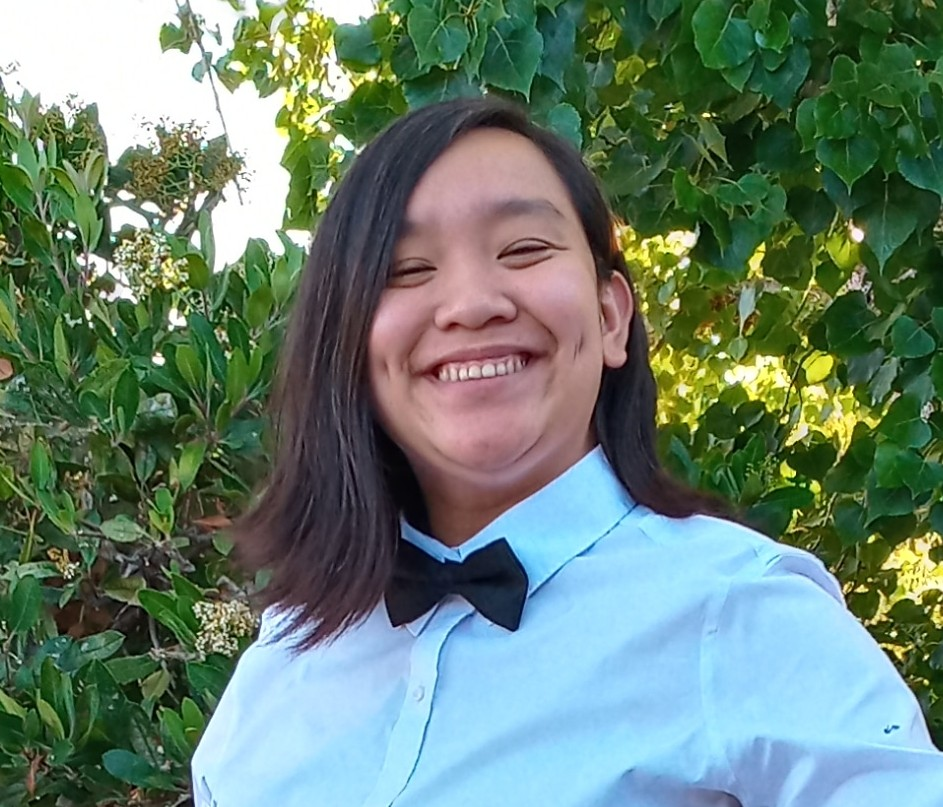

Alia Toth-Smith
Hello, my name is Alia Toth-Smith! This is my website for ART 101 at UCSC, taught by Wes Modes. I am currently 20 years old. I'm a sophmore at UCSC, pursuing a bachelors of the arts degree in art and design games and playable media (AGPM). I grew up in the Bay Area. I am an only child. In my free time, I like to write fiction, sing, read DND books, and play with my dog, Charlotte.
ART 101 Labs
- Lab 2: HTML & CSS Starter
- Lab 3: File Structure & File Transfer
- Lab 4: Pseudocoding & Problem-Solving
- Lab 5: Data Types & Variables
- Lab 6: Arrays & Objects
- Lab 7: Functions
- Lab 8: Anon Functions & Callbacks
- Lab 9: JavaScript for the Web
- Lab 10: JavaScript Events & Forms
- Lab 11: Libraries & jQuery
- Lab 12: Conditionals
- Lab 13: Loops
- Lab 14: Debugging Tools & Strategies
- Lab 15: AJAX
- Lab 16:
- Lab 17: